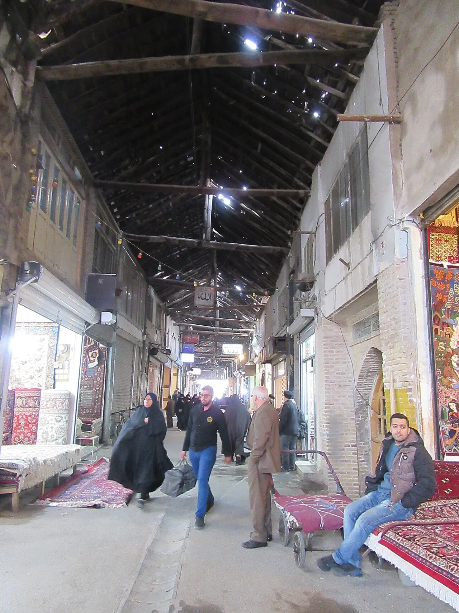

هدايا مشهد عند العودة: تحقق من قواعد بلد الوصول قبل الشراء.
الإجابة المختصرة
قبل شراء الزعفران أو الحلويات أو الهدايا في مشهد، تحقق من قواعد التصدير من إيران ومتطلبات الإدخال في بلد وجهتك، فقد تختلف القواعد بحسب المنتج والكمية. راجع المصادر الرسمية للسلطات الجمركية وشركة النقل، واحتفظ بالفواتير أو بيانات المنتج عند الحاجة؛ السماح بالخروج لا يعني السماح بالدخول.
قد يرغب الزائر في شراء الزعفران أو الحلويات أو الحرف اليدوية أو هدايا دينية من مشهد. لكن السماح بإخراج المنتج من إيران لا يعني بالضرورة السماح بإدخاله إلى بلدك؛ تختلف القواعد بحسب السلعة والكمية وبلد الوصول وشركة النقل.

دليل إرشادي؛ تحقق من الشروط المتغيرة من الجهات الرسمية ومقدمي الخدمة.
اختيار الهدية والتحقق من جودتها
قارن السعر والوزن والتعبئة، واطلب فاتورة أو إيصالاً عند الشراء. بالنسبة للمنتجات التي تُباع على أنها زعفران أو أحجار أو معادن ثمينة، لا تعتمد على الوصف الشفهي فقط؛ اسأل عن بيانات المنتج وسياسة الاستبدال وتجنب الادعاءات غير القابلة للتحقق.
قبل شراء الزعفران أو الحلويات أو المكسرات أو المنتجات النباتية، تحقق من قيود بلد الوصول على الأغذية والمنتجات الزراعية، ومتطلبات التغليف والإفصاح والكمية. قد تختلف القواعد للمنتجات التجارية والشخصية، ولا يكفي أن تكون السلعة معروضة للبيع في السوق.
الأدوية والمواد المقيدة
لا تفترض السماح بنقل الدواء أو المنتجات ذات المكونات المقيدة عبر الحدود. تحقق من القواعد الرسمية لبلد المغادرة والوصول وشركة النقل، واحتفظ بالوصفة أو المستندات عند الحاجة. لا تضع مواد غير معروفة أو مشتريات شخص آخر في أمتعتك دون معرفة محتواها.
الأمتعة والفواتير
راجع وزن الأمتعة المسموح به لدى شركة النقل، واحتفظ بالمشتريات والفواتير بشكل منظم. اسأل عن قواعد حمل السوائل أو المواد القابلة للكسر والتغليف، ولا تفترض أن الأغراض اليدوية والمشحونة تخضع للشروط نفسها.
التحقق من الجمارك قبل العودة
راجع الموقع الرسمي للجمارك أو الجهة الحكومية في بلد الوصول، وابحث عن قواعد الأغذية والنباتات والأدوية والمبالغ النقدية والسلع الثمينة. إذا لم تجد جواباً واضحاً، اطلب توضيحاً من الجهة المختصة قبل الشراء بكميات كبيرة.
شراء المنتج بصورة قانونية داخل إيران لا يعني تلقائياً السماح بإدخاله إلى بلدك. قد تختلف القيود بحسب نوع السلعة والكمية والتغليف وبلد الوصول، وقد تخضع الأغذية والمنتجات النباتية والأدوية لقواعد إضافية.
اسأل البائع عن اسم المنتج ومكوناته وبلد منشئه، واحتفظ بالفاتورة.
فضّل العبوات الأصلية المغلقة والواضحة البيانات، وتجنب المنتجات مجهولة المصدر.
قبل شراء الزعفران أو المكسرات أو المنتجات النباتية، راجع قواعد التصدير الإيرانية وقواعد الاستيراد في بلد الوصول.
تحقق من القيود الخاصة بالأدوية والمواد ذات الطبيعة الطبية، ولا تحمل دواءً لشخص آخر دون مستنداته اللازمة.
اسأل شركة الطيران عن شروط وضع المنتج في الأمتعة اليدوية أو المسجلة، فهذه قواعد نقل منفصلة عن الجمارك.
لا تعتمد على أرقام متداولة في مواقع السفر أو على قواعد بلد آخر؛ راجع الجمارك الرسمية في جهتي المغادرة والوصول قبل الشراء.
مصادر رسمية ومراجع للتحقق
استخدم هذه الروابط للتحقق من المعلومات قبل الحجز أو الزيارة. قد تتغير الخدمات والأسعار وساعات العمل وقواعد السفر؛ المرجع النهائي هو الجهة المختصة أو مقدم الخدمة في تاريخ رحلتك.